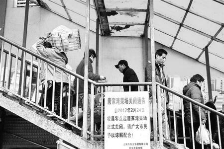
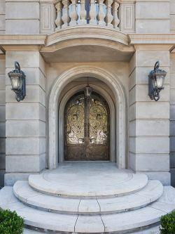

唐家湾
2017年清晨，“万有全唐家湾小菜场”里，喧闹中百味混杂。北方大厦对过个胡梯1浪向，已经人轧人2。望下看，摊连摊，贩挨贩，向南绵延三百余米，大小弄堂数不胜数四通八达；单胡梯上去个室内市场，也堪称品种齐全，物美价廉。

箇搭3是大上海顶早个小菜场，没“之一”两字，建于1903年。而大约莫100年前，替4小菜场一般年纪个庄锡庆也来到了此地，见到了与现在相当个繁华。
庄锡庆指垃小菜场东首个空地，对伊个父亲讲：“就迭搭，我房子造好，将来买小菜赛过霞飞路介便当。望北有白云观，朝南有惠中堂，走走侪弗到廿分钟。我天天去拜，仙人或者上帝总归会得保佑我生意吧！”
庄锡庆个父亲讲：“其他侪好，但不过伊拉讲斜桥南是坟墩。有眼近，风水弗大好吧？”
庄锡庆讲：“迭个有啥啦？讲近也有段路要走唻。人总有一天要翘辫子个，离坟近，我个子孙送我葬还省得遠唻。”
“侬隻小鬼头只有几岁啊？”庄父嘲嘲伊，“葛侬预备房子造啥样子？”
庄锡庆答：“必须是洋房，三层，顶少要十几间。我花園里要种一棵白玉兰，子子孙孙看到树，侪可以想起我。”
庄父继续嘲：“小鬼掼派头阿？侬将来结之婚也只有两家头，要介许多房间发痴？”
庄锡庆胸一挺，讲：“我要养大兒子、二兒子、三兒子……我每个兒子还要大孙子、二孙子、三孙子……我还怕房间弗够多唻——到辰光要伊拉一淘送我葬！”
庄锡庆个房子后来就造好了，但伊並没葬垃上海，推测伊客死他乡。垃拉箇个几十年里，庄家命运起起落落，历经富足殷实、生离死别、骨肉失散、天各一方。单论其中某桩事体，侪未必稀奇。但上海弗晓得有多少条“锡庆”里，每条“锡庆”里，侪有得一位“庄锡庆”叹息过。箇个也作兴是阿拉上海人个公共记憶？
烟囱管
我出生于80年代，从记事起，就好奇洋房里个点滴事物。我经常问我母亲问题，而伊也自幼生活于此。从听到个一眼零碎个信息里，我纔了解到庄家个部分故事。庄锡庆本人，我並未见过。
我一直弗欢喜洋房个暗洞：从房子东面进来，过道狭窄，终年弗见太阳，漆黑阴冷，日里向走走也抖抖豁豁。
我问母亲：“上海人住房紧张，条件侪弗理想，我懂个。但为啥阿拉小区个暗洞要箇恁设计？”
伊答道：“箇幢房子一开始並弗是公房，而是一个五金厂老板个花園洋房。
“老板个名字叫庄锡庆。阿拉103号弄堂大门口有两个字，虽然畀人家用水泥存心涂过，但还是看得见印子：‘锡庆里，1922年建’，就是庄锡庆个名字。庄锡庆住进来埃歇，洋房弗比孙中山故居逊色，一等一个豪华。
“现在103号弄堂大门口个位置，本来是铁门，靠了旁边石头围墙，门一关，就是庄锡庆私人财产。按伊设想，洋房入口垃南面。大理石个臺阶，宽得来可容三个人平排走。拱形个大门，两边柱头，高头遮阳棚。拱门进来个胡梯，直通二楼客堂间，就是现在万伯伯屋里。

“之所以有得暗洞，是因为房子经历了两次历史事件。锡庆里垃原法租界内，以唐家湾为界，同时代还有英美等国个公共租界。1941年，太平洋战争爆发，东洋人拿法英美等国个人赶脱，一时上海滩盗贼横行。庄锡庆为保平安，拿洋房南面个门封脱，胡梯拆脱。东面开出入口，存心修成暗洞，让外人弗容易进得来。暗洞尽头，搭出临时木头胡梯，通二楼西面后厢房。日军投降以后，庄锡庆放之炮仗，拿南面个正门再修成替原先一样。伊是完美主义者，拿暗洞到底个临时胡梯拆脱了。
“到了五几年碰着公私合营，庄锡庆为躲避仇家，再拿南面个拱门胡梯拆脱，重新启用暗洞，再造临时胡梯。箇趟伊财力吃紧，所以造了介搭浆。”
我问：“庄锡庆屋里介好，一定是大老板咯？伊是哪恁个人阿？”
母亲说：“我也没看见过伊，只认得伊两个囡兒。
“我小辰光跟了侬外公、外婆搬进箇幢房子。除脱阿拉，还有张阿姨跟大张姐姐、小张姐姐。张阿姨自家住垃马桶间隔壁朝东个小间，让大张姐姐睏垃前头西面箇间，小张姐姐睏垃东面最南间。其他房间侪已经畀空关锁脱了，包括一楼替三层楼所有个房间。
“妈妈小辰光替小张姐姐白相了最好。伊拉屋里有隻风琴，我经常去弹。伊书架高头侪是乐谱，里向头还夹了几张黑胶唱片，不过留声机坏脱放弗出声音。偶尔看到伊翻乐谱辰光，眼神有点异样，弗像小学生应该有个。
“张阿姨垃吉安路个厂里上班，后首来厂改成了小学，就是侬读个小学，原先埃面是法藏讲寺。张阿姨为之多赚两钿，畀张家两个姐姐吃牛肉，工作卖力，替领导要求做夜班。日里向，伊还要买小菜、汏衣裳、生煤炉、烧饭。
“我从来就没看见过张阿姨拉先生，就问外公究竟。伊讲：‘张阿姨没结过婚，老早是庄锡庆个佣人，比女主人小十多岁。庄锡庆是资本家，前两年去香港做生意了，两个小姑娘实际浪姓庄，是伊个囡兒。不过记牢：侬垃外头人面前千万只好叫伊拉张姐姐，否则要闯祸。’”
我问：“葛末庄锡庆两个囡兒我也没看到过呀。或者是囡兒个后代又改姓了，所以我弗认得？”
母亲讲：“弗是。两个囡兒后首来侪出过事体。
小张姐姐没读初中，毕业以后就替社会接触了。伊欢喜带人到张阿姨替大小张姐姐屋里参观。有段辰光，伊经常带同一个哥哥转来，迭个哥哥比大张姐姐还大几岁。张阿姨好像弗大欢喜迭个哥哥，背后头讲伊是小流氓。之后，小张姐姐从夜到老晏转来，发展到夜不归宿，有一日出去之后就再无音讯，直到张阿姨过世！”
我问：“伊畀小流氓拐脱了？”
母亲答：“‘小流氓’弗一定哪恁流氓。但我猜想，小流氓乱轧坏淘，朋友个朋友个朋朋友里向有得拐子大流氓，就发生了悲剧。
“事体过脱第二年，大张姐姐五爱中学（原惠中中学，后改为五爱中学，再后头改为李惠利中学，再再后头改为比乐中学）毕业。为了支援国家建设，去黑龙江接受贫下中农再教育了。走个箇日，12月份，张阿姨替大张姐姐早浪四点钟就出门了。张阿姨衣着单薄，拿厚衣裳侪畀了伊，还为伊烧了十斤熟牛肉，让伊带之路高头吃。大张姐姐大包小包又背又拎，怪张阿姨畀伊物事忒多没必要，张阿姨弗停个关照啥个物事阿里隻包里寻。”
我问：“所以现在‘大张姐姐’屋里住个陈家，‘小张姐姐’屋里个孙家，侪是伊拉跑脱以后搬进来个？”
妈妈讲：“弗是。小张姐姐个房间原本是主人房，顶大。现在孙家屋里是拿伊房间一揦两个一半，另外一半是郑家。但是大张姐姐跑脱以后，最先搬进来个还弗是陈家，而是冯家，之后调畀陈家。同样道理，小张姐姐个房间一揦两以后，一半畀了赵家，之后调畀钱家、孙家；另外一半周家、吴家，最后到郑家。”
我问：“再后头，阿拉个邻舍就陆续搬进来了？”
母亲讲：“对。几年后，底楼、三层楼侪畀住满，直到花園里也搭满棚棚，大家地方侪紧张。
“张阿姨隔壁个劳家，劳括币拉爸爸垃张家阿姨门口替伊自家门口当中，用砖头砌了灶头——侬可能弗认得老底子个灶头——劳括币拉爸爸一烧饭，就乌烟瘴气，张阿姨只好门一关，一家头迓进去弗敢响。”
我讲：“我晓得个，‘大张姐姐’就是去插队落户了，二舅舅二阿姨侪去过。好像一般性侪好回来个对伐？”
母亲答：“弗是。从理论高头讲，是转弗来个。二舅舅是要读大学；二阿姨声称要照顾外婆：伊拉纔回得来。70年代末，为防止社会混乱，一般知青有大小原因借口个，侪准许回原籍。但是，有一种情况是批弗准个，就是已经当地结婚个说话——除非离脱。
“大张姐姐一去就是十几年，垃当地结了婚，外加养了一对龙凤胎。但伊还是一家头回上海了，讲因为有严重个胃病。”
明显，“大张姐姐”为了回来离婚了。
母亲继续讲：“但可悲个是，伊转来后，原来姐妹两家头个房间侪已住进陌生人。大张姐姐垃张阿姨屋里住了一年多，寻了居委替弗晓得多少干部，侪没结果，最后只好再去黑龙江谋生了。”
我问：“三层楼烟囱像煞吃过炮弹，哪恁会个？讲起来淞沪会战打到阿拉屋里来过？”
母亲讲：“淞沪会战地方遠了，替阿拉浑身弗搭界。讲起箇桩事体，罪过了。
“两个姐姐跑脱之后，伊拉两间房间就侪畀政府锁脱空关了。刚没人竳个几年，五爱中学个学生子——大张姐姐个学弟学妹——夜到没事体就叫之‘消灭资本家余孽，斩草除根！’个口号，用花園里个石头厾玻璃窗。小张姐姐个窗门畀弄得侪是洞，落雨刮风，房间里就水漫金山，拿地浪向个木头泡烂脱，水一直从缝缝里漏到一楼。
“张阿姨去寻有关部门，讲要去修，一直没人睬伊。伊讲只要替伊拿锁开出来，伊可以自家出铜钿修。人家干部对伊讲：‘侬十几年来，一直是拿白卡借住垃锡庆里个。房子又弗是侬个，侬管卵个闲事？’张阿姨反複解释因为两位张姐姐一定会得转来个，伊求人家讲：‘我倪东家留下来两个囡兒。大囡兒去黑龙江劳动，小囡兒跟伊个朋友出去白相。伊拉虽然还没转来，但再多等两年，总归会得转来个。房子坏得迭恁，我要修好之等伊拉转来继续竳。’人家听得莫名其妙。
“再后头，一天半夜，暴雨忽闪。小张姐姐房间个壁炉畀雨水灌满，湿透个烟囱管，赛过避雷针。一声巨响，屋头顶也赛过要穿脱，一米多宽砖头砌个烟囱，应声一断两。妈妈畀吓醒，吵得睏弗着，爬起来去马桶间，就听见张阿姨一家头垃房间里哭！”
味精厂
1993年3月，某个礼拜六，我吉安路小学中浪向放学。垃屋里一直等到夜快头，母亲纔下班，从唐家湾买好小菜转来。伊垃门口汏衣裳，劳括币齐巧垃伊祖传个灶头搭生火，生之一半。
一行四人，包括年近古稀轮椅浪个男子，四十几岁个妇女，两个十廿岁衣着朴素个男青年，从暗洞搭上来了。两青年扛了轮椅连老人，踏了老旧个木头胡梯，显得分外沉重，臺阶异响弗断。青年想用胡梯两侧个木板借力，咔嚓咔嚓，弗敢再试。
四人到了二楼，中年妇女推之轮椅，对门口两位居民道：“我倪从香港过来。我个爷爷四十几年前是锡庆里个东家。我倪今朝来，是为了瞻仰伊个故居。麻烦，麻烦。”
我问母亲：“阿里个东家？东面有四家？阿里家？”
母亲解释道：“‘东家’就是房子主人个意思。”
我又问：“阿里间个主人呢？阿是东面某间？”
我瞎缠个辰光，劳括币炉子也弗生了，主动要带伊拉兜兜，抢垃前头拿轮椅望楼高头抬。我跟垃伊拉后头去看闹猛。
到了三层楼，一行人停垃晒臺南首。轮椅老人垃两青年搀扶下底，勉力立起来。伊从晒垃𡋤个衣裳被头空隙中指指楼底下，预备讲言话。劳括币邪气识相，拿伊晾个物事，弗管干个湿个，统统捏垃一淘，地浪向一摆，弗嫌鄙龌龊。视线就清了。
轮椅老人讲：“爸爸当年住进锡庆里，第一日就种白玉兰，就是迭棵。”伊指垃𡋤个是棚户群中一间杂出来个房子。房子从里向生出棵树，穿出屋头顶，高过房子几倍，枝叶像洋伞介，拿房子侪罩牢之——下底为人居，树上做鸟窠。
伊指垃两间棚棚房子，讲：“此地原先是花房。”又指垃弄堂口过街楼讲：“之前迭搭呒没二楼，一楼是黄包车亭子。”
伊继续讲：“本来晒臺高头只有迭间、迭间替迭间（伊指了指其中几间相对正气个房间），交关宽舒，可以踏脚踏车。
“迭根烟囱管通二楼主人房个壁炉。妈妈生肺结核怕冷，爸爸垃房间里烧壁炉陪牢伊，一直到妈妈跑脱。”
老人指垃西北面个高房子讲：“天厨味精厂。妈妈老底子顶欢喜替爸爸垃晒臺里伏太阳。伊基本浪每趟侪要骄傲个提起味精厂，伊话：‘东洋人统统侪滚蛋，我倪上海人要吃上海滩自家个味精！’”
中年妇女指垃东面遠处带两隻球个高楼，问老人：“迭个是啥？”
老人弗晓得，劳括币讲：“辣个四东方明渣电四塔哇。进辣80年代，丧海衬四建设肋新月异，摩天大楼纷纷登厂。辣个东方明渣91年开工，将来灰四丧海底标志哇。里们路果感兴趣，下可以带里们去参观，没得问题啊！”
一行人又回到二楼，老人向伊后辈逐一介绍了各间房间个历史替庄锡庆个事迹。拉末，伊讲：“㑚应该对爸爸哪恁来香港，有所了解。
“民国36年，蒋介石败局已定，坏消息接连传来。爸爸个故友查先生来寻爸爸，伊是上海滩‘日月报馆’个老板。伊话伊要去香港避难，建议爸爸跟了伊跑。爸爸话妈妈旧年生毛病，到现在还㬟恢復，等伊痊愈之纔好一淘去人生地弗熟个户荡闯。
“但，妈妈毛病一直㬟好。后首来，三日两头有弗二弗三个人上门寻爸爸晦气。爸爸拿南面客堂间个胡梯拆脱……”
老人讲起各路仇家哪恁来捣蛋，以及庄府入口改造个事体。
老人继续讲：“爸爸一直㬟拿外头形势话畀妈妈听，直到妈妈跑脱个一天……
“迭一日天灰蒙蒙个，四周侪是工厂，排出来个烟呛鼻头，我都弗适意。早浪头，妈妈咳醒了。伊从西面后厢房爬起来，对老早就候垃床边个爸爸话：‘我想去晒臺伏太阳。’
“爸爸话：‘今朝天气弗好，晒臺风大，侬现在忌吹风，还是覅去了，等侬身体好转，我倪日日可以伏太阳。侬阿要听周璇？我放畀侬听？’
“妈妈话：‘我是弗会好了，趁我现在还走得到三层楼，还是让我去看看吧。’
“爸爸话：‘弗会个。我昨日之刚刚去寻过臺佛史牧师（惠中堂建立者），伊话我交关虔诚，上帝记我功德，托梦畀伊特为提到侬，上帝会得差玉皇大帝王母娘娘下凡，助侬毛病好转个。’
“妈妈话：‘晒臺里弗好去，去前头大房间阿好？我也好看看窗外个白玉兰？’
“爸爸话：‘兴慈法师（法藏讲寺长老）话过，锡庆里风水弗推板，就是南面迭间弗适合生病人。顶好要搬到西面后厢房，拿腰门关脱，纔弗会受东南瘟星侵扰。’
“妈妈㬟听爸爸劝，还是开了房门，话：‘腰门弗好开，我到过道里走走总归弗碍事吧？’爸爸也弗忍心揦牢伊。但妈妈一跑出去，还是听出了异样——外头唢呐放肆，锣鼓震天。‘啥路道，哪恁垃做啥人个道场阿？’
“腰门开出来。我垃南面主人房个阳臺替丁力对峙。丁力是爸爸个徒弟，五金厂车间主任。伊带了十几个流氓垃楼下头骂山门。两个阿妹迓垃张阿姨房间里弗敢出来——迭个一切，还是畀妈妈看到了……
“妈妈走到阳臺里，见楼下停了两隻墨墨黑个棺材，当中摆隻花圈，左右一幅对联：
“‘沉痛悼念庄锡庆及其痨病鬼夫人，无情埋葬日本鬼子及其汉奸走狗！’
“丁力看到妈妈出来，话：‘师姆娘啊，侬要劝劝㑚先生看清形势哦。现在已经建国了，万恶个资本家虽然罪该万死——（丁力指垃爸爸鼻头）尤其有种介资本家还勾结日本鬼子——但组织是宽容个，对伐？㑚先生上趟拿五金厂交出来，组织上㬟待亏㑚，还畀㑚吃定息。现在教㑚拿锡庆里公私合营，哪恁资本家贪婪个本性又暴露，弗肯配合了啦？’
“爸爸妈妈一向痛恨东洋人，日军也已经投降之十几年了，迭种无中生有实在下作。
“爸爸拿妈妈望后厢房拖，妈妈硬劲弗走，跟赛过众牲个丁力论道理。只几句就气得鲜血喷出，爸爸纔拉伊得动。丁力一帮子出老一边拿花園里个石头望高头厾，一边狞笑，嘴巴里话：‘哦哟哦哟，侬看，痨病鬼吐血了，痨病鬼吐血了喏。哈哈……’
“妈妈回到房间啥个也㬟话，又睏觉了。等伊再醒转来，已经是齐夜快了，爸爸一直㬟吃，候垃床边。
“妈妈话：‘庆阿哥，我要再看一趟天厨味精厂。’
“‘庆阿哥’是妈妈老底子刚认得爸爸个辰光，对伊个昵称。迭个已经是啥个年代了啊？
“爸爸弗晓得应该哪恁话——楼下头个瘟牲还㬟滚蛋——妈妈又话：‘风水问题弗影响个，北窗搭看看也可以了。’
“北窗外头，夕阳西垂，天加二灰暗。

“妈妈眼望味精厂话：‘庆阿哥，当年我倪刚结婚，是一淘眼看天厨味精厂从平地造起来个啊。十六浦船隻川流不息，霓虹灯照亮夜空，唐家湾小贩日日有新面孔，五金厂蒸蒸日上，侬为工人垃后弄堂造个石库门，人越住越多：上海滩蓬勃发展。埃歇点辰光，天几化个蓝，井水甜味味个，日脚过得鲜得来，赛过佛手牌味精。’
“‘日脚过得鲜得来，赛过佛手牌味精。’ 妈妈又重複了遍。
“话好之，又睏了，然后就再㬟醒过来。”
老人讲到此地，停了歇，又继续讲：“妈妈跑脱之后，爸爸就带我来香港了。垃半路，替阿拉同行个王伯伯，畀鲨鱼埃个……埃个……脱了。”
箱中谜
箇一日，庄锡庆对张阿姨讲：“我今朝发寒热，竳西面后厢房要睏一整日。我教我兒子陪垃𡋤就好，就弗麻烦侬过来了。”
庄锡庆用之大半日功夫，整理出了一叠老照片，拿油布包好。再拿压缩饼干替阿司匹林分了两份。吃之中饭就替庄子睏觉了。
半夜里，伊爬起来，拿照片贴身囥好，推醒庄子，轻声道：“按计划分头行动。”两家头拿好预备个物事，钱财一眼也弗敢带。
庄锡庆开臺灯写了张条子，拿张阿姨房门掀开条缝。伊盯牢睏着个张阿姨，呆牢了——箇隻面孔也曾年方二八，美艳动人啊。11岁个小张也垃伊眠床浪，抱牢伊酣睡。小姑娘头发垃黑暗中都看得见光泽，眼睫毛又长又密，面孔粉笃笃。
啥人甘愿拿自家屋里个人，连同箇笔辛苦打拼得来个财富厾脱啊？
庄锡庆望垃𡋤，心里垃煎熬：“我要弗要拿伊叫醒一淘跑？留伊下来，我放弗落心；带了伊走，路高头凶险重重，我两个囡兒明显过弗去，又离弗开伊。伊拉弗跑，倒作兴一眼呒啥呢？我是资本家，伊拉又弗是。”
另外一头，庄子从主人房个玻璃窗望楼下扫了遍，再到弄堂口张了张。回转来通报没异常，催伊抓紧。
庄锡庆拿纸条夹了门缝缝，门虚掩之。两个人灯也弗敢开，摸之黑，迓出自家个屋里。
过脱一歇歇，一阵风吹过，门“嘎嘎”，开大了眼，纸头phia，落了地浪。张阿姨睏梦头一惊，爬起之看到纸条，已预感弗妙。工整个字迹道：
小莉：
有侬相伴廿三年来，我十分甜蜜幸福，却㬟待侬哪恁好过。乃终横祸临头，还要再来托侬，实在意弗过。
我走个迭大，前路茫茫，吉凶未卜。奈何留下之两个囡兒，年幼无依，望侬肯管教伊拉。尤其是小囡兒，伊天性纯良，弗识人心险恶，我间主人房，请侬让畀伊竳，教伊少吃眼苦头；西面前头间，予我大囡兒。我其他一切财产，侬可以自由处置。
我庄某人虽弗是慈善家，但自问办事待人无愧于心，却何故天地难容？遠走他乡，或有出路。愿锡庆里此后太太平平，㑚一家三口，安居其中，好永享天伦。
珍重，勿念
庆
轮椅上个老人道：“爸爸经常话：‘我对㑚妈妈替张阿姨两家头——我是有事体对弗起㑚妈妈；但我一生一世顶顶亏欠个，还是㑚张阿姨啊。’
“爸爸畀我一隻箱子，吩咐我决计弗可以拆开来看，只话里向有封信。将来万幸可以回转上海滩，碰着之张阿姨，弗管伊有啥变化，一定要拿箱子交到伊手。万一……”
老人指了指马桶间隔壁一间，问劳括币：“迭家人家还垃𡋤？”
劳括币道：“辣个老推怕一则一个仑渣，大前年总算四……去世了。”
老人讲：“爸爸话，否则就交到我两个阿妹手里。”
中年妇女就问劳括币“两张”个下落，得到了伊拉个坏消息。
老人讲：“爸爸又话，假使侪交弗到，就拿箱子烧脱，也算是对伊个交待。”
劳括币道：“乖乖隆地冬，不仑烧，不仑烧。下们的访子四木透做底，烧了要着火。下们没得地方渣，要没得命底。”
中年妇女谢过劳括币预备离开，劳括币道：“不要谢，不要谢，但是呢……里看，下配了里们这么多世吼，没得功劳也有苦劳吧？有零千没得？”
中年妇女头也弗敢抬，推了轮椅转身就跑，两个青年后头跟垃𡋤。走出几步，其中一个青年回转来，袋袋里挖出一把角子，边拣边数，畀了劳括币几钿。
老旧个胡梯仿佛唉叹个二胡，一行人下楼了。
大事记
1903年：唐家湾水边设摊；庄锡庆出生
1904年：庄妻出生
1908年：唐家湾填河修路，小菜场渐具规模
1917年：张阿姨出生
1922年：锡庆里建成
1923年：天厨味精厂迁至顺昌路330号
1924年：庄子出生
1929年：佛手牌味精冲出上海，驰名世界，天厨味精厂厂房连年扩建
1933年：张阿姨入庄家
1941年：太平洋战争爆发，庄府正门第一次改造
1943年：长女（大张）出生
1945年：日军投降，庄府正门修復
1945年：幼女（小张）出生
1946年：庄妻患病
1947年：日月报馆查先生南渡
1954年：《公私合营暂行条例》通过，庄府正门第二次改造
1956年：庄妻病故，庄锡庆携子逃亡
1958年：第一家房客入住
1960年：小张失联
1961年：大张下乡
1966年：文革开始
1968年：庄府遭雷击，烟囱损坏
1974年：大张离婚回沪
1975年：大张再赴黑龙江谋生
1990年：张阿姨孤独中去世
1993年：庄子遵父遗命至故居寻访张阿姨
2017年：唐家湾小菜场停业待拆
2019年：原天厨味精厂厂房（已被列入4422处不可移动文物）于争议中拆毁
2022年：锡庆里拆迁，百余户移居；经黄浦区区政府评估批准，老树白玉兰被砍倒
自此，庄家往事，随锡庆里一淘，灰飞烟灭了。